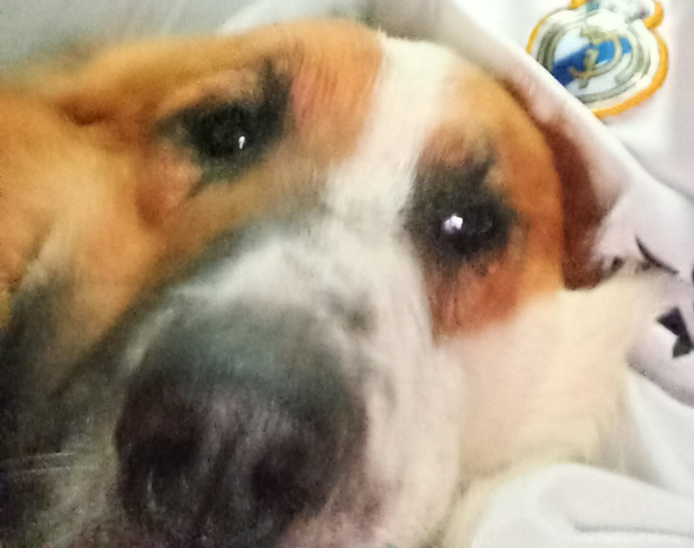

Animes
Frieren e a Jornada para o Além: O Tempo e as Relações
Uma das melhores produções recentes. Uma reflexão profunda sobre a brevidade do tempo, perdas e conexões humanas.

Animes
Uma das melhores produções recentes. Uma reflexão profunda sobre a brevidade do tempo, perdas e conexões humanas.

Animes
Conheça um poco da obra prima BLEACH um dos tres grandes. Iconico e Eterna obra. Inspiração para muitas outrs.

Animes
Uma jornada emocionante sobre determinação, superação do preconceito e o verdadeiro valor da amizade.

Animes
A incrível jornada dos irmãos Elric quebrando tabus e buscando respostas através da Lei da Troca Equivalente.

Fotografia
Deixe-me agracialos com minhas fotos do Céu.

Culinária
Feita com leite condensado, creme de leite e suco concentrado, essa mousse aerada é ideal para o domingo.

Pets
Conheça um pouco mais sobre a minha companheira felina que adora inspecionar meus códigos de Front-End.

Pets
Histórias, travessuras e as manias mais engraçadas dos meus cachorros que transformam a rotina focada de estudos.